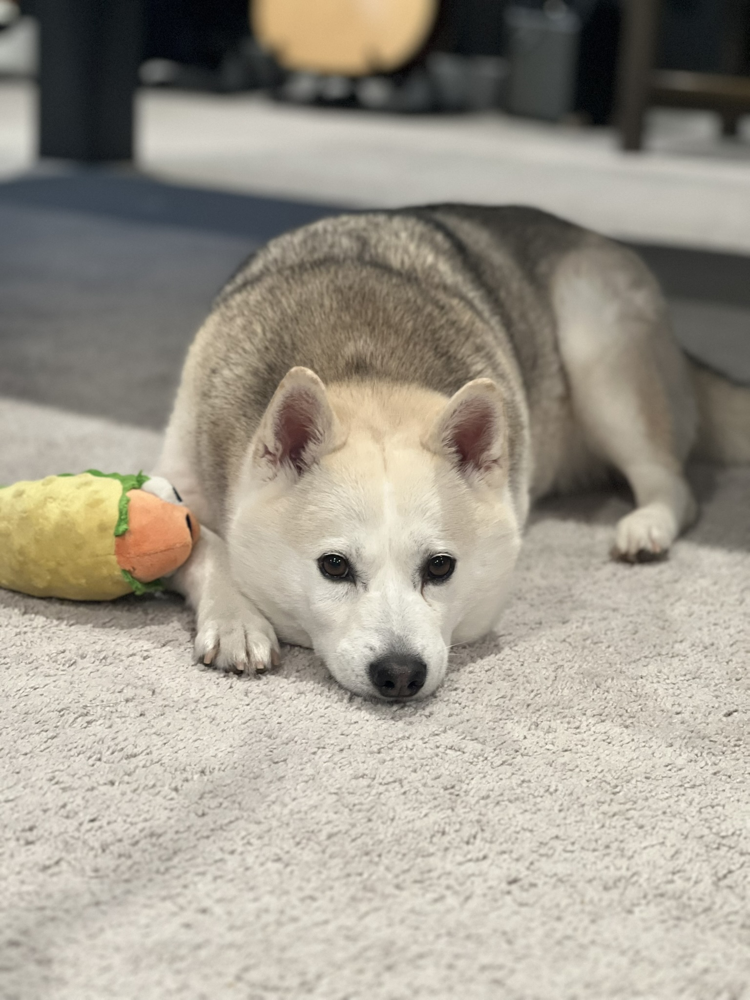

Kevin Knoll
Software engineer, open-source contributor, and occasional writer. I build things for the web and care deeply about clean, purposeful design.
Projects
Project Alpha
A CLI tool that automates repetitive dev workflows. Built with Node.js and published on npm.
Node.js CLIProject Beta
A real-time collaborative whiteboard built with WebSockets and Canvas API.
TypeScript WebSocketsProject Gamma
An open dataset + explorer for public transit delays across major cities.
Python DataBlog
Thoughts on software, design, and the occasional rabbit hole. Read posts →
Contact
Have a question or want to work together? Get in touch →